Projects
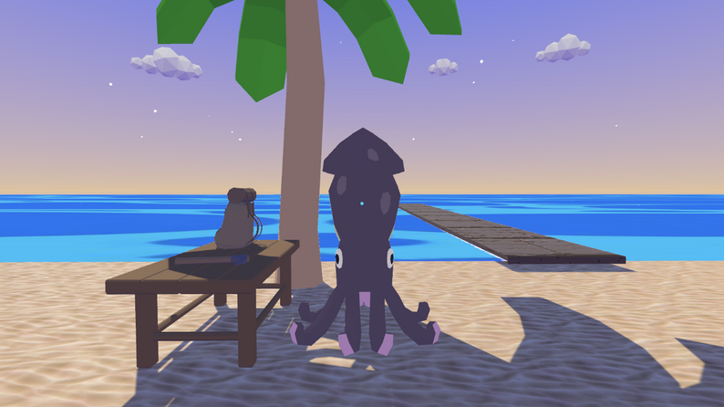
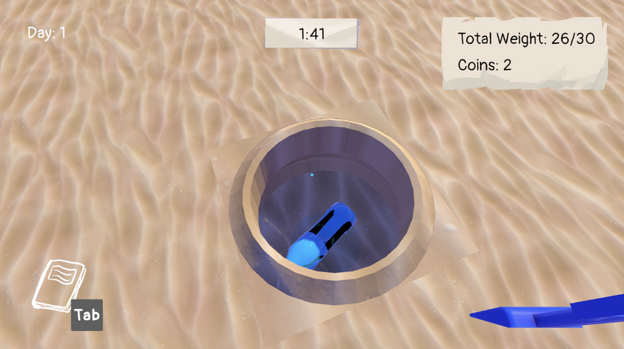
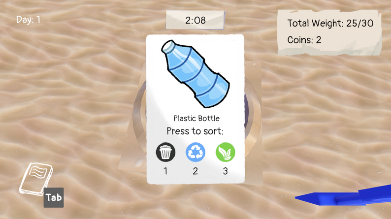
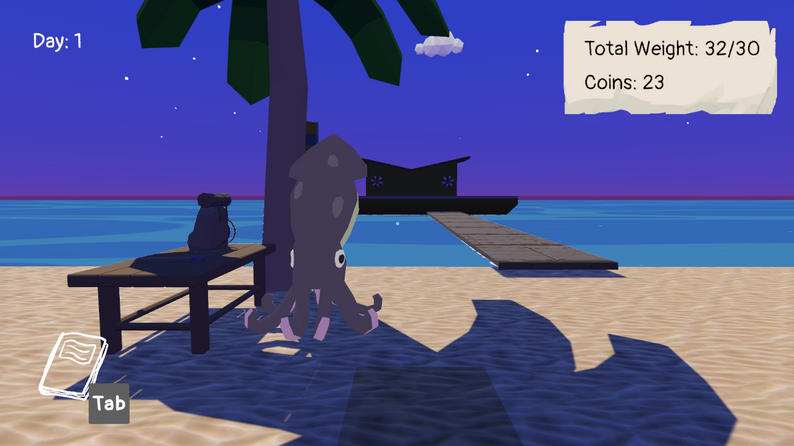
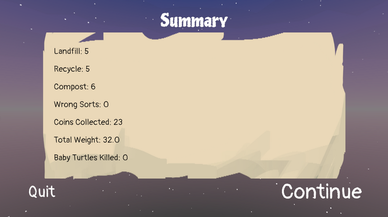
Your Trash, My Treasure (2026)
Dig up trash, beat the clock, and sort it right! Help Nelson the Squid clean up the beach in this satisfying digging-and-sorting game powered by fast-paced quick-time events. Fun for players of all ages, with a bit of environmental education mixed in. Built in Unity by a two-engineer team, with custom music and sound effects from our sound team at Berklee College of Music.
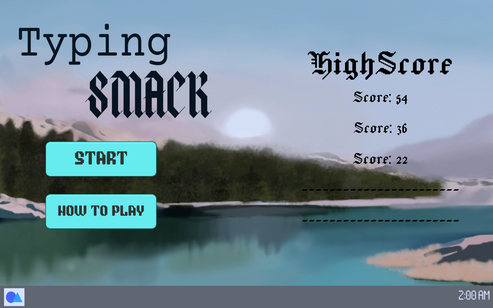
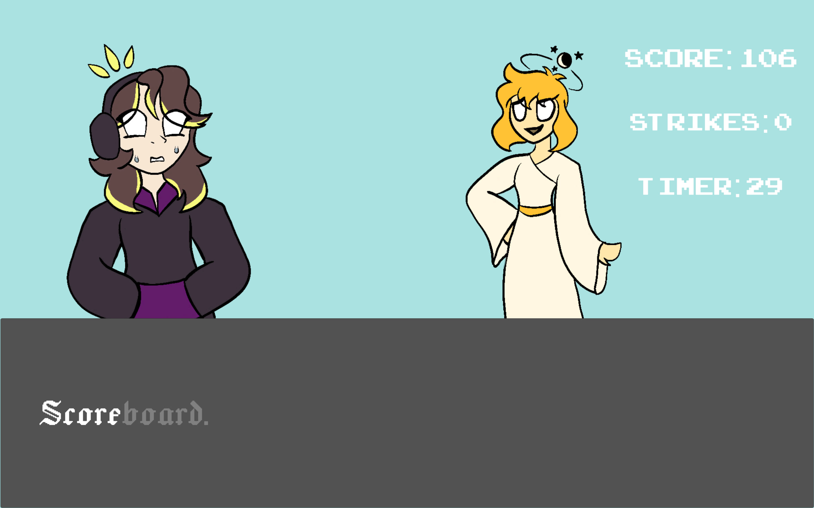
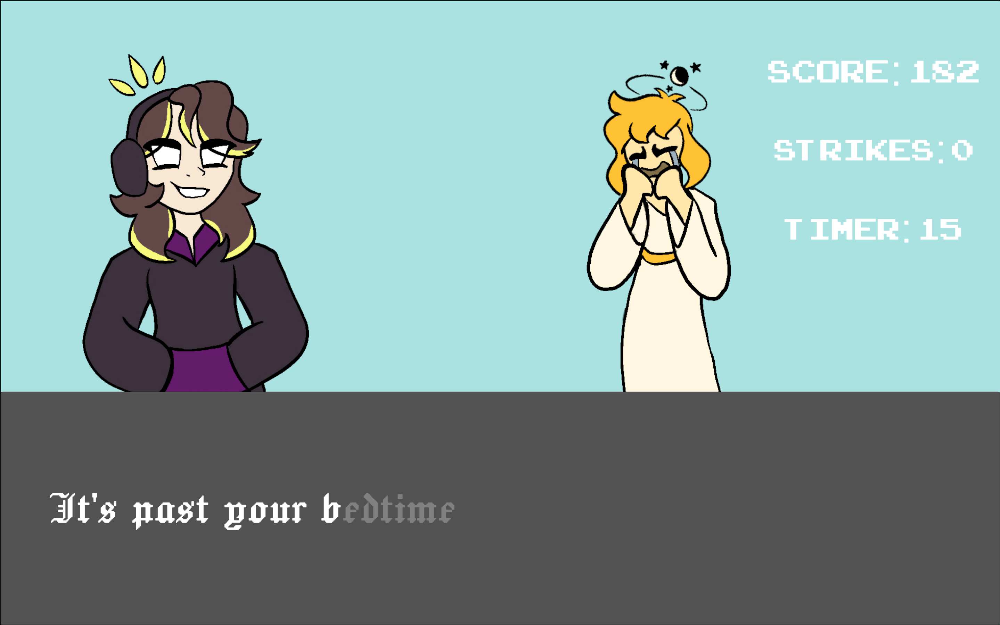
Typing Smack (2025)
Endless typing game where you talk smack to players, made with a team for Open Alpha USC x USC Keebies Ctrl+Alt+Create Game Jam. Inspired by the moments just after winning a competitive game match. Features all original artwork and music.

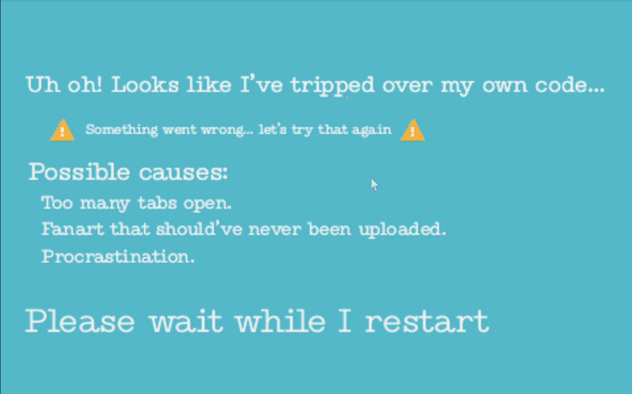
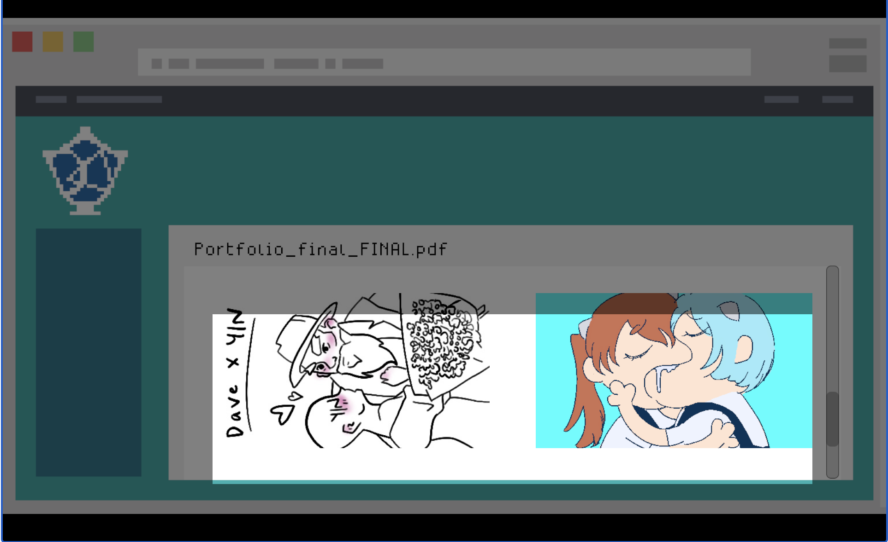
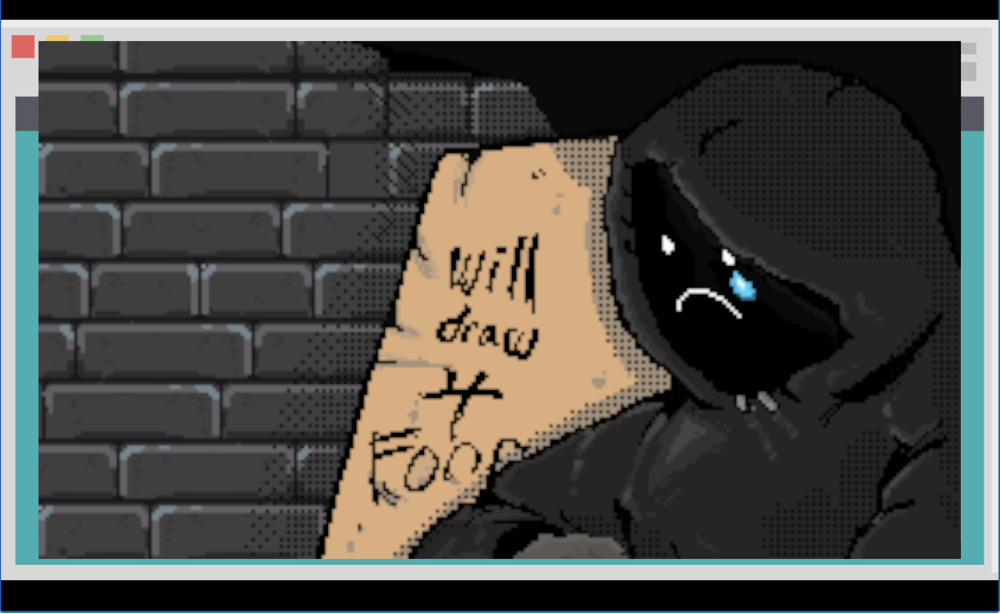
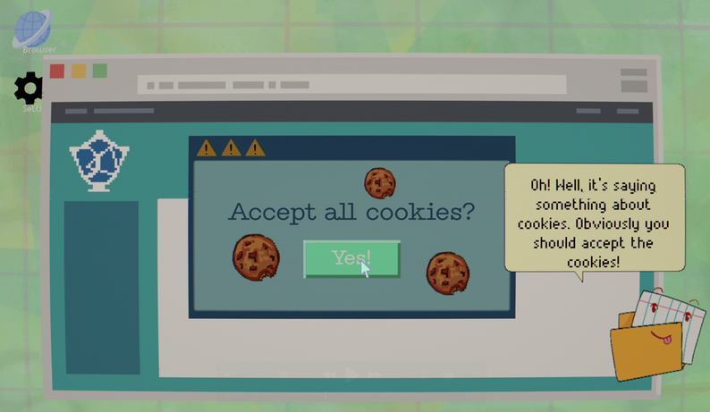
Open Your Browser (2025)
You're an art student applying to colleges, but you accidentally submit fanfic in your portfolio. You scramble to unsubmit before it's too late, and your computer crashes. Now you have to navigate your own desktop with the help of Manny, your computer assistant, and take back that portfolio before the deadline hits. An all-original humorous pixel-art game built over a semester with Open Alpha USC, where I worked as a programming mentor. I implemented my assigned gameplay features while teaching newer members how to program in Unity and C#.

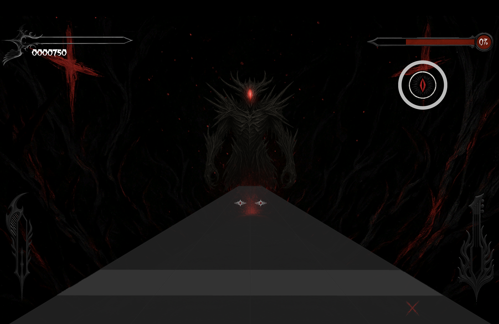
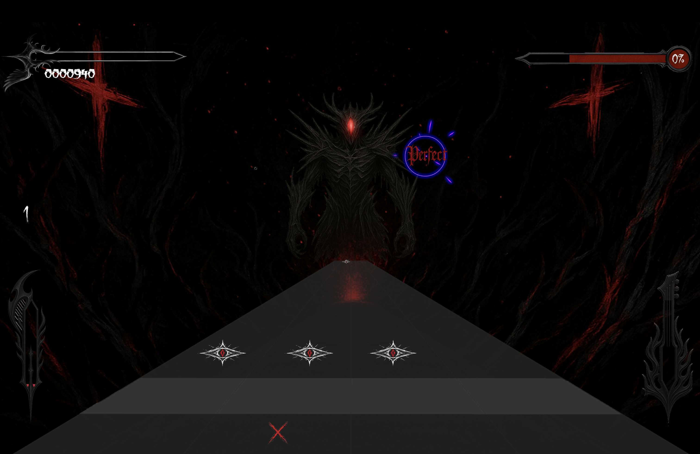
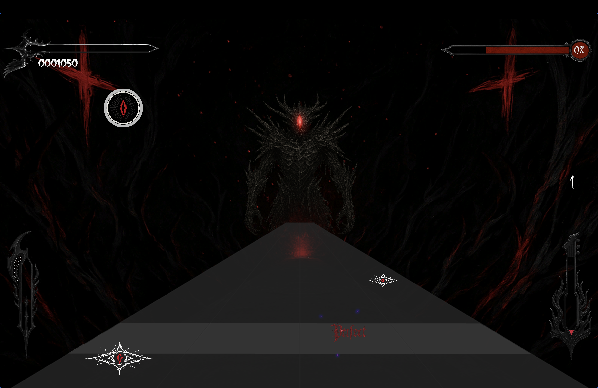
Cantus Ex Umbrea (2024)
A two-player rhythm game set in a dark nightmare. One player on mouse, one on keyboard. They must sync their timing to block attacks and land counterstrikes. With a high enough chain of perfects together they are able to trigger burst mode where they can unleash a flurry of attacks by button mashing! Made in Unity with a friend. I was the main engineer, and implemented the rhythm engine, syncing the timing to the pitch of the main song, while also keeping the build clean and bug-free for our weekly deliverables.
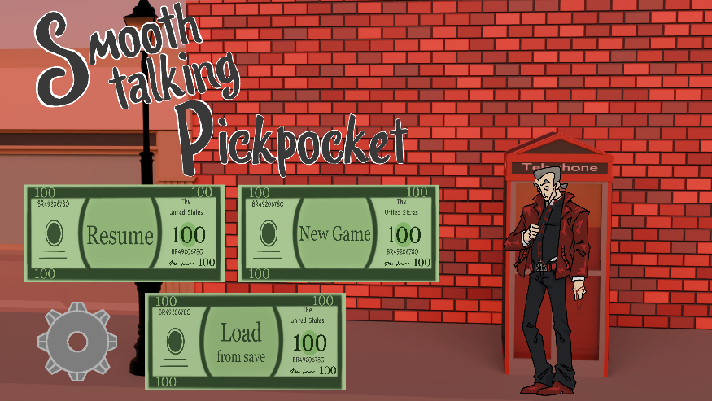

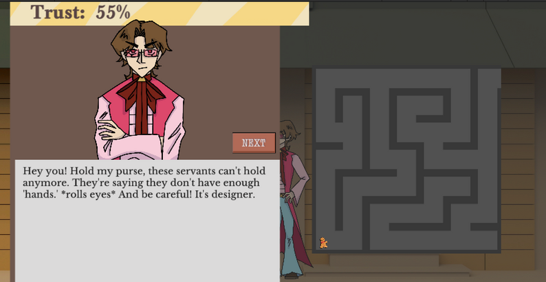

Smooth-Talking Pickpocket (2024)
A narrative pickpocketing game set in New London, where you have five days to steal your way to the top before the gala. Talk your way through a cast of strange characters, make them trust you, and pick everyone's pockets! However, if you get caught, Detective Gwydir puts you in jail. What you steal along the way decides your ending. Made with Open Alpha USC over a semester. I worked as an engineer on the team, shipping my assigned features and keeping the build clean for our weekly deliverables.